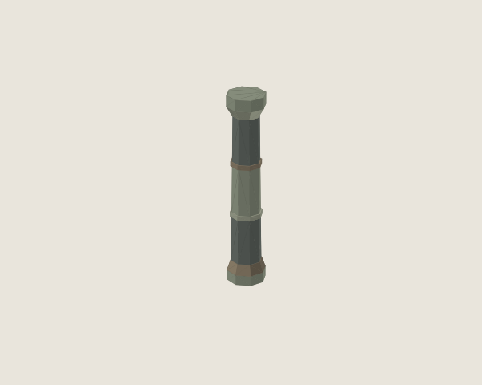
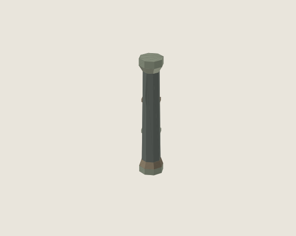
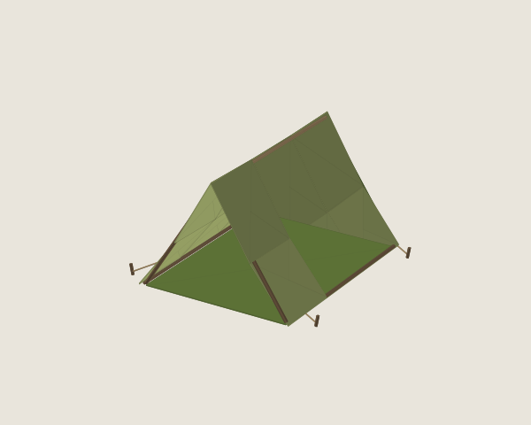
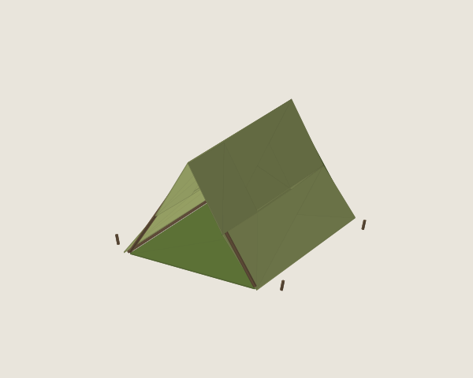
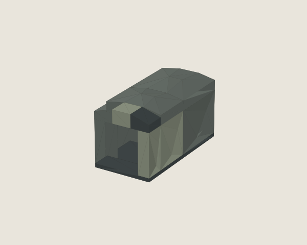
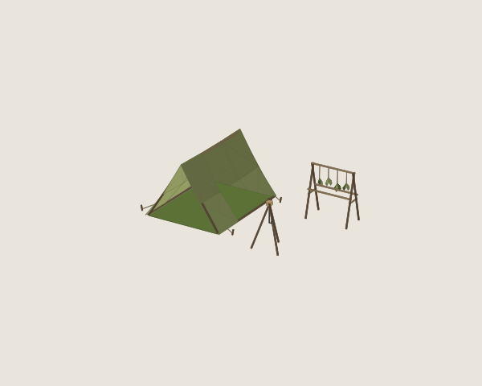
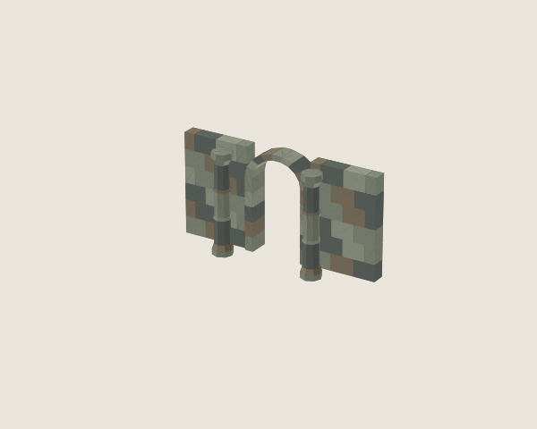

← 전체12종LOD와 조합 장면 검토
LOD1 3종 · 6방향 정적 실루엣 검사 통과. 실제 엔진 자동 전환과 색상 팝 검사는 미완료.
건조대 LOD는 실루엣 기준 미달로 제외했습니다. 조합 장면은 배치 예제이며 게임 플레이 데모가 아닙니다.
TW_RUIN_ARCH_DOOR_A
TW_RUIN_PILLAR_ROUND_A

LOD0 · 252 trianglesLOD0 다운로드
LOD1 · 196 triangles · 22.2% 감소LOD1 다운로드TW_CAMP_TENT_RIDGE_A

LOD0 · 432 trianglesLOD0 다운로드
LOD1 · 296 triangles · 31.5% 감소LOD1 다운로드동굴 연결

조합 GLB 다운로드
야영 배치

조합 GLB 다운로드
유적 입구

조합 GLB 다운로드